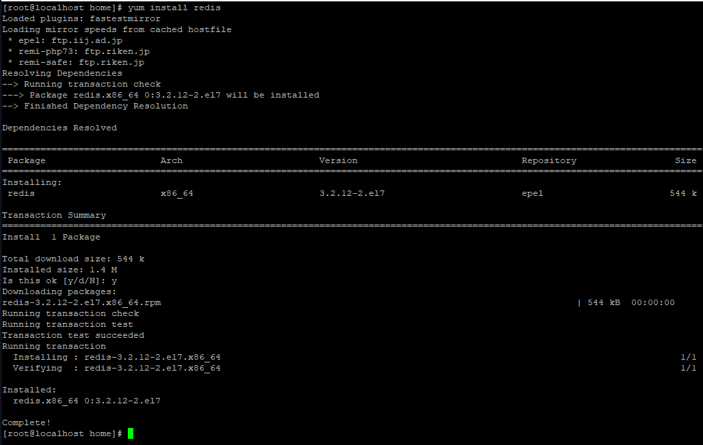
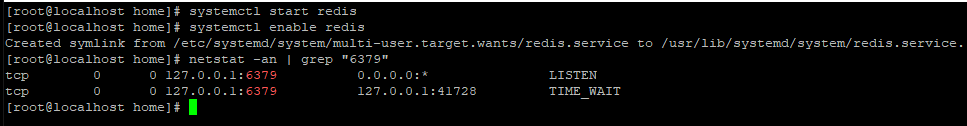
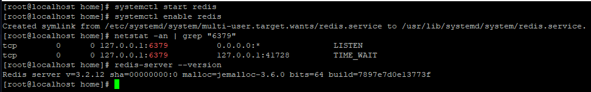
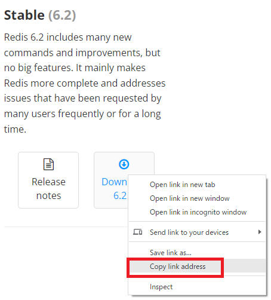
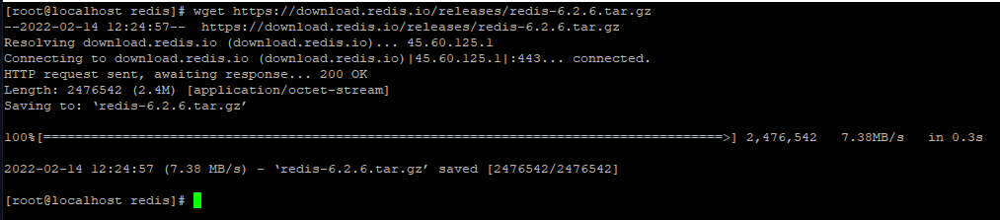
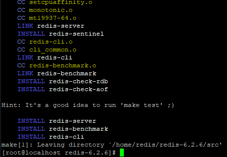
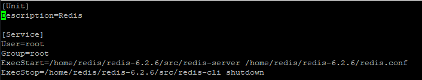
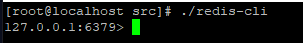
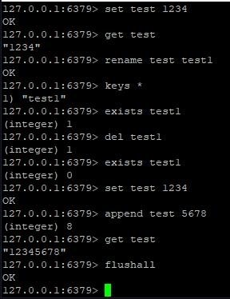
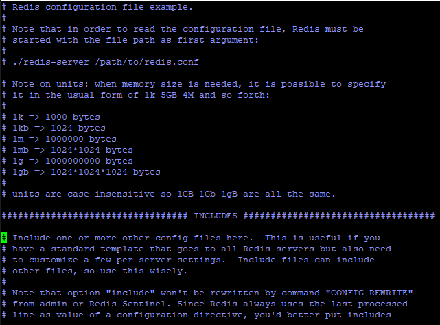

[CentOS] Redisデータベースをインストールする方法とコマンドを使い方
こんにちは。明月です。
この投稿はCentOSでRedisデータベースをインストールする方法とコマンドを使い方に関する説明です。
RedisとはRDBタイプとは別のNoSQLタイプのデータベースです。つまり、SQLでデータを入力、取得するデータベースではなく、特定なAPIを通って扱うデータベースです。
構造はKey - Valueの構造で、InMemory構造になっているのでデータ挿入が早いし、検索が早くなるデータベースになります。
Redisに関する定義や内容はグーグルを利用して調査すると様々な正確な定義と説明があります。
私が少し理解しやすく説明するとただShare Memory、つまり、メモリを共有するシステムだと思います。
普通にプログラムを起動するとプログラム中の変数などを通ってメモリにデータを割り当てします。そのメモリに割り当てしたデータはOSのプロセスメモリ保護機能で別のプログラムで該当なメモリにアクセスができません。
つまり、AプログラムとBプログラムを実行して、Bプログラムで割り当てたクラスのデータをAプログラムで使いたいと思えば、ソケット通信を通ってデータを共有します。一般的な方法です。
もしかして、ここでプログラムが一つを追加するとメモリ共有の流れが複雑になります。Bプログラムで生成されたメモリデータをAプログラムで修正します。その後、BプログラムはCプログラムに値が更新されたことを通報します。
また、ここでプログラムを一つを追加します。つまり、プログラムが増えるほど流れがもっと複雑になります。
もちろん、File IOで共有することができますが、それならIOのConnectionの流れに関して考えなければならないです。つまり、ファイルにデータを書き込みする役でConnectionを繋いでるなら別のプログラムではファイル修正が不可能です。
様々な不便な流れと規約ができますね。
そうすると一番しやすく解決する方法はMap構造になるメモリとソケット通信でSet、GetでMapメモリにアクセスが可能なプログラムがあれば良いです。そのプログラムがRedisです。
RedisプログラムはJavaではMap、C#ではDictionary構造の変数一つとソケットを通って外部でデータを格納、取得することが可能なプログラムです。
CentOSでは簡単にyumでインストールが可能です。
# Redis インストール
yum install redis

# Redis 実行
systemctl start redis
# Redis 起動登録
systemctl enable redis

# バージョン確認
redis-server --version

そして環境設定は「/etc/redis.conf」のパスにあります。環境設定に関しては下記で詳細に説明します。
一応、yumで簡単にインストールができますが、バージョンが低いですね。。 redisのホームページでは6.2バージョンがありますが、yumでは3.xバージョンですね。
そうするとホームページでダウンロードしてインストールしましょう。
参照 - https://redis.io/download
そしてリンクアドレスをコピーしましょう。

そしてwgetでダウンロードします。

そして圧縮を解凍してビルとしましょう。
tar xzf redis-6.2.6.tar.gz
cd redis-6.2.6
make install

インストールが完了しました。
先にサービスの登録ファイルを作成しましょう。
vim /etc/systemd/system/redis.service
[Unit]
Description=Redis
[Service]
User=root
Group=root
ExecStart=/home/redis/redis-6.2.6/src/redis-server /home/redis/redis-6.2.6/redis.conf
ExecStop=/home/redis/redis-6.2.6/src/redis-cli shutdown

これからRedisを実行しましょう。
# 実行
systemctl start redis.service
# 停止
systemctl stop redis.service
実行してsrcフォルドのredis-cliを実行しましょう。

ここまでの画面が表示するとインストールが完了し、実行されることです。
これからRedisコマンドでデータを格納、取得しましょう。
Redisコマンド
Redisで使えるコマンドはすごく多いです。
参照 - https://redis.io/commands
でも、よく使うコマンドは多くないです。よく使うコマンドだけ整理します。
| コマンド | 説明 |
|---|---|
| set [key] [value] | keyの値をキーでデータを格納する。 |
| get [key] | keyの値をキーでデータを取得する。 |
| rename [key] [newkey] | keyの値を変更する。 |
| keys [pattern] | keyを検索する。「*を入れるとすべてキーを取得する。」 |
| exists [key] | keyが存在するかを確認する。 |
| del [key] | keyの値をキーでデータを削除する。 |
| flushall | すべてキーを削除する。 |
| append [key] [value] | keyの値をキーでデータの値を追加する。 |
| setex [key] [seconds] [value] | keyの値をキーでデータの満了時間を設定する。 |
| ttl [key] | keyの値をキーでデータの満了時間を確認する。-1の場合、満了時間が設定しないこと。 |
| save | 現在、Redisのデータの状態をバックアップする。ファイル名はconfigで設定する。 |

Redis環境設定
Redisの環境設定はバージョンより差異があります。確認してから設定しなければならないです。
参照 - https://redis.io/topics/config
詳細的な設定だけバージョンより違いますが、よく使うポート設定とbind設定は似ているから確認すれば良いです。
| 環境設定 | 説明 |
|---|---|
| bind [ip] ... | 許可するip設定 例) bind 192.168.0.100 192.168.0.100 (該当なipだけ許可) 例) bind 127.0.0.1 -::1 (ローカルだけ許可) 例) bind * -::* (すべてip許可) |
| protected-mode [boolean] | 保護モードが活性化しているとローカルだけ接続を許す。 |
| port [number] | ポート設定 |
| dir [direcotry path] | 作業のディレクトリ設定 |
| dbfilename [filename] | バックアップファイル名を設定 |
| save [seconds][changes] | 指定された時間の間にキーが指定された個数ほど更新するとバックアップ # save 900 1 (900秒(15分)間で少なくとも一つ以上のキーが更新すると格納する。) |

Redisに関しては4~5年前から知っていましたが、活用する部分では必要性を感じ無かったんですが、1~2年前からウェブサーバーのセッションクラスタリングで性能が良いって聞いて後からずっと使っているデータベースです。
セッションクラスタリングだけではなく、様々なシステムでシェアーメモリとして使うことが思ったより使いやすいしインストールも簡単なので最近はよく使うことになりました。
もちろん、プログラム間でデータをやり取りする時には直接なソケット通信が性格ですが、同じサーバーで複数のプログラムを起動するかマイクロサービス、つまり一つのドメインで様々なサーバーで分割してプログラムを作成する時にかなり便利に使えます。
ここまでCentOSでRedisデータベースをインストールする方法とコマンドを使い方に関する説明でした。
ご不明なところや間違いところがあればコメントしてください。
- [CentOS] Redisデータベースをインストールする方法とコマンドを使い方2022/02/14 18:33:07
- [CentOS] Linux環境(CentOS)でCassandra(NoSQL DB)をインストールする方法(DBeaverブラウザでNoSQL使い方)2021/11/12 17:33:58
- [CentOs] ジェンキンス(Jenkins)をインストールする方法2021/10/18 18:28:58
- [Ubuntu] PHPをインストール、Composer設定する方法2019/11/13 07:32:21
- [Ubuntu] テーマ(Arc)を変更する方法(tweak)2019/11/12 07:32:13
- [Ubuntu] Apache2をインストールする方法2019/11/11 07:28:28
- [Ubuntu] 「acquire the dpkg frontend lock」のエラーを解決方法2019/11/10 22:19:34
- [Ubuntu] JavaインストールとEclipseをインストールする方法2019/11/08 07:29:55
- check2024/04/10 19:03:53
- [Java] 64.Spring bootとReactを連結する方法(Buildする方法)2022/03/25 21:02:18
- [Javascript] Node.jsをインストールしてReactを使う方法2022/03/23 18:01:34
- [Java] 63. Spring bootでcronスケジューラとComponentアノテーション2022/03/16 18:57:30
- [Java] 62. Spring bootでWeb-Filterを設定する方法(Spring Security)2022/03/15 22:16:37
- [Java] JWT(Json Web Token)を発行、確認する方法2022/03/14 19:12:58
- [Java] 61. Spring bootでRedisデータベースを利用してセッションクラスタリング設定する方法2022/03/01 18:20:52
- [Java] 60. Spring bootでApacheの連結とロードバランシングを設定する方法2022/02/28 18:45:48
- [Java] 59. Spring bootのJPAでEntityManagerを使い方2022/02/25 18:27:48
- [Java] 58. EclipseでSpring bootのJPAを設定する方法2022/02/23 18:11:10
- [Java] 57. EclipseでSpring bootを設定する方法2022/02/22 19:04:49
- [Python] Redisデータベースに接続して使い方2022/02/21 18:23:49
- [Java] Redisデータベースを接続して使い方(Jedisライブラリ)2022/02/16 18:13:17
- [C#] Redisのデータベースを接続して使い方2022/02/15 18:46:09
- [CentOS] Redisデータベースをインストールする方法とコマンドを使い方2022/02/14 18:33:07